BLACK HOLE MATHEMATICA PRESENTATION
Background Information
Kip Thorne
Kip Thorne is a theoretical physicist largely known for his work in the movie Interstellar. During production, the Interstellar team faced numerous challenges in the production images of a black hole with the gravitational lensing of a star field behind it . Thorne' s solution was to begin by programming in Mathematica .
"I wrote down the equations and I tested them in Mathematica by integrating numerically and then building images with the ImageTransformation function," says Thorne .
He also used Mathematica to help generate many of the illustrations in his book, The Science of Interstellar . Which contains more than 50 illustrations generated with the assistance of Mathematica .
Goals For This Presentation
- To understand the conceptual theory behind black holes
- To determine the radius of a star when it collapses into a black hole
Stellar black holes form when the center of a very massive star collapses in upon itself . This collapse also causes a supernova, or an exploding star, that blasts part of the star into space. Scientists think supermassive black holes formed at the same time as the galaxy they are in. Most black holes form from the remnants of a large star that dies in a supernova explosion .
Astronomers can use several indirect methods to determine stellar mass . One method, called gravitational lensing, measures the path of light that is bent by the gravitational pull of a nearby object . Although the amount of bending is small, careful measurements can reveal the mass of the gravitational pull of the object doing the tugging .
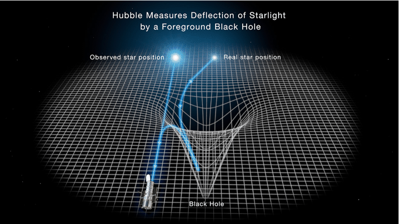
This illustration reveals how the gravity of a black hole warps space and bends the light of a distant star behind it . A black hole is the crushed remnant of a massive star that exploded as a supernova . The black hole traps light due to its intense gravitational field, hence it cannot be seen directly . The black hole distorts the space around it, which warps images of stars lined up almost directly behind it . This offers telltale evidence for the existence of lone black holes wandering our galaxy . The light from a background star is deflected and brightened by the black hole' s intense gravitational field . The Hubble Space Telescope goes hunting for these black holes by looking for distortion in starlight as the black hole drifts in front of background stars .

Gravitational lensing is predicted by Albert Einstein' s theory of general relativity . Instead of light from a source traveling in a straight line (in three dimensions), it is bent by the presence of a massive body, which distorts spacetime . An Einstein Ring is a special case of gravitational lensing, caused by the exact alignment of the source, lens, and observer . This results in symmetry around the lens, causing a ring - like structure .
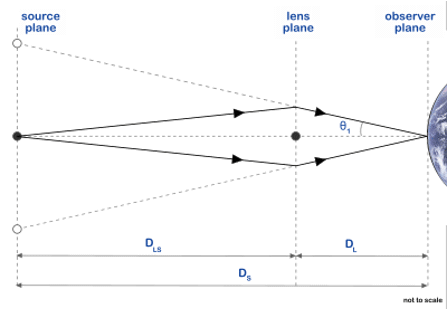
The geometry of a complete Einstein ring, as caused by a gravitational lens
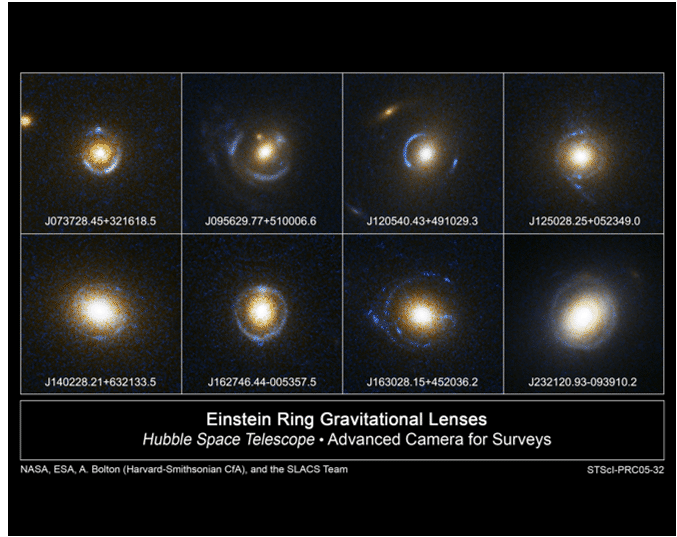
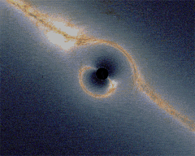
Einstein Rings Close to a black hole
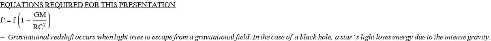
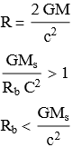
Let's Examine All the Stars That Are Approaching Our Solar System
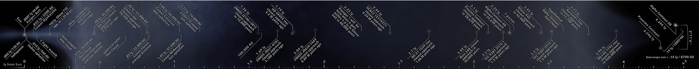
Schematic view to scale of past and future close approaches of stars to the Sun (Up to 4.5 light - years)
Smaller stars become dense neutron stars, which are not massive enough to trap light .
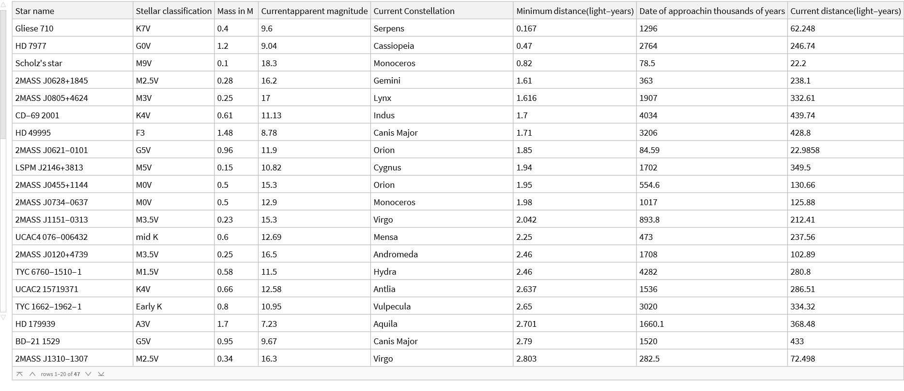
Mass Elements
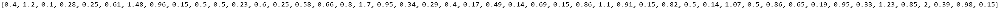
Table Conversion
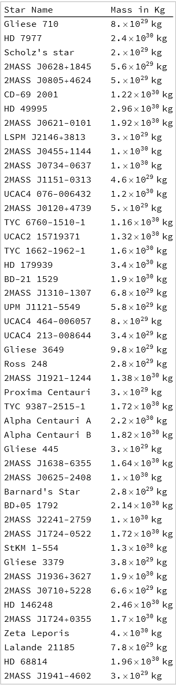
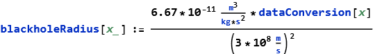
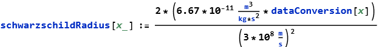
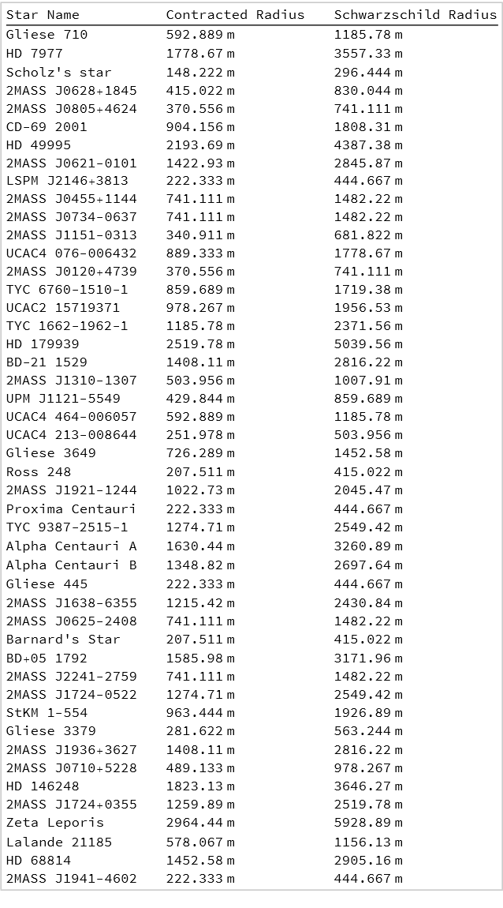
Application To the Largest Known Stars In the Milky Way
Red super giants form when stars of more than ten solar masses begin to burn their helium . Eventually such a star will burn all of possible fuels and go into gravitational collapse, resulting in a super - nova . If the mass left over from this collapse is large enough (a remnant of three to five solar masses), the remnant will collapse into a black hole .
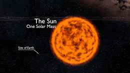
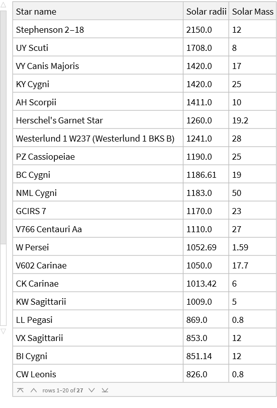
Mass Elements
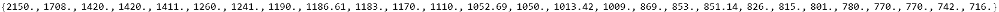
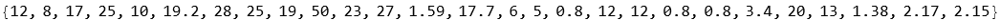
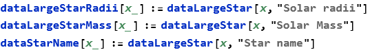
Table Conversion
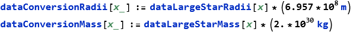
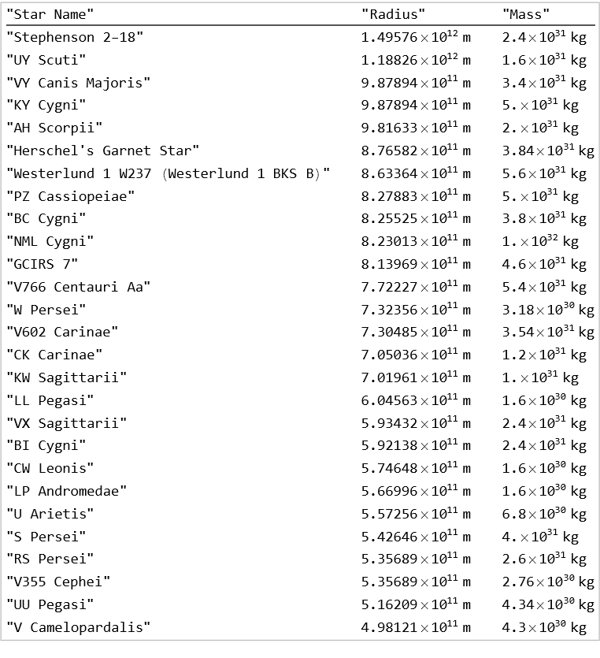
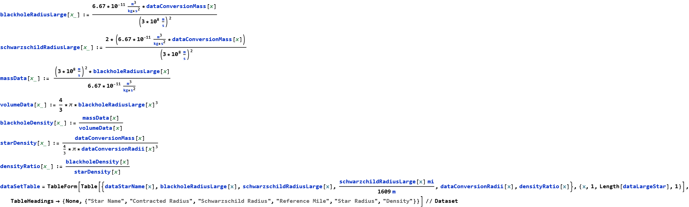
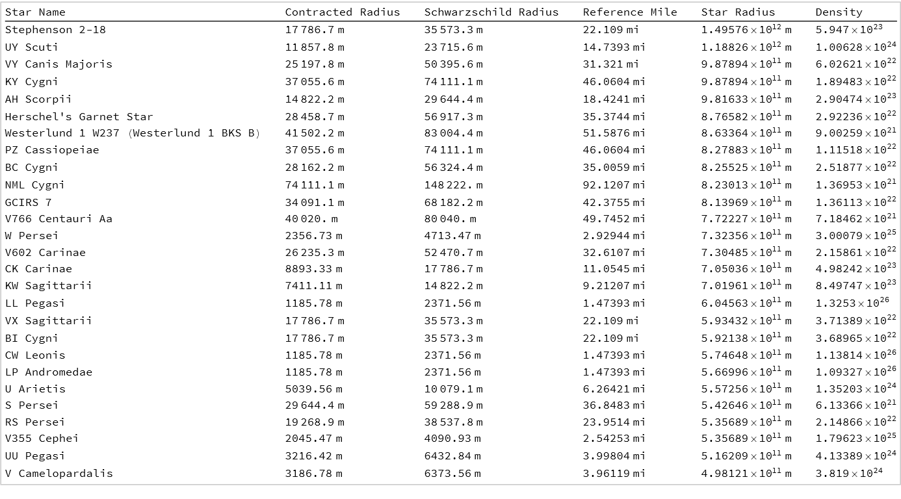
Black holes come in many sizes and their size depends on how much material is in them (their mass) . Some are the remains of a giant star which collapsed . A star has to be much more massive than our Sun to become a black hole . These types of black holes are only a few miles across .
Comparison To the Largest Black Hole
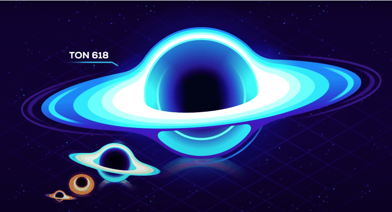
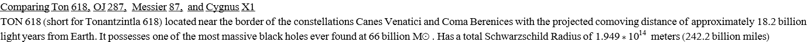
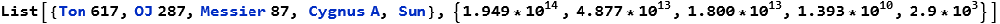
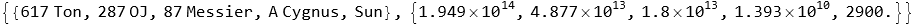
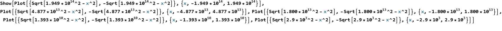
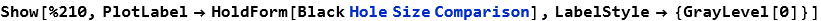
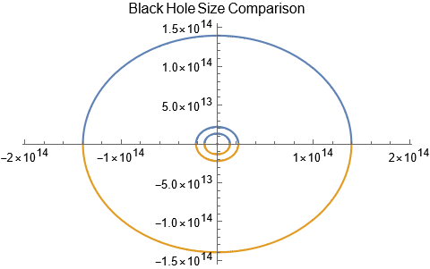
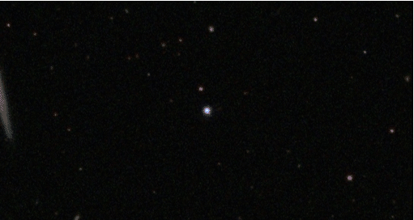
Black holes can be big or small. Scientists think the smallest black holes are as small as just one atom . These black holes are very tiny but have the mass of a large mountain. Hawking radiation, causes the black hole to lose mass and it can ultimately evaporate . If material falls into a black hole it will add to the black hole's mass and hence make it bigger . Also black holes can collide to form bigger black holes .
Goals For the Future
Measure the Einstein Ring
Measure Gravitational Lensing
Black Hole Simulations
Examine Hawking Radiation
Sources
“Einstein Ring.” Wikipedia, Wikimedia Foundation, 3 Aug. 2022, https://en.wikipedia.org/wiki/Einstein_ring.
“List of Nearest Stars and Brown Dwarfs.” Wikipedia, Wikimedia Foundation, 2 Aug. 2022, https://en.wikipedia.org/wiki/List_of_nearest_stars_and_brown_dwarfs.
Dunbar, Brian. “What Is a Black Hole?” NASA, NASA, 21 May 2015, https://www.nasa.gov/audience/forstudents/k-4/stories/nasa-knows/what-is-a-black-hole-k4.html.
“TON 618.” Wikipedia, Wikimedia Foundation, 27 July 2022, https://en.wikipedia.org/wiki/TON_618.
Tillman, Nola Taylor, and Ben Biggs. “Main Sequence Stars: Definition & Life Cycle.” Space.com, Space, 26 Jan. 2022, https://www.space.com/22437-main-sequence-star.html.
Petersen, Carolyn Collins. “How Astronomers Determine Stellar Mass.” ThoughtCo, ThoughtCo, 3 July 2019, https://www.thoughtco.com/how-to-determine-the-mass-of-a-star-4157823.
“Star’s Black Hole Encounter Puts Einstein’s Theory of Gravity to the Test.” Science, https://www.science.org/content/article/star-s-black-hole-encounter-puts-einstein-s-theory-gravity-test.
“Gravitational Lensing by a Black Hole.” HubbleSite.org, https://hubblesite.org/contents/media/images/2022/001/01FRKBDN5YKMM9ZMT5Q7TSN4RN?news=true.
“Einstein Ring.” Academic Dictionaries and Encyclopedias, https://en-academic.com/dic.nsf/enwiki/322588.
Parnell, Brid-Aine. “Kip Thorne Explains How He Created the Black Hole for Interstellar.” The Register® - Biting the Hand That Feeds IT, The Register, 24 Oct. 2014, https://www.theregister.com/2014/10/24/kip_thorne_interstellar_black_hole.